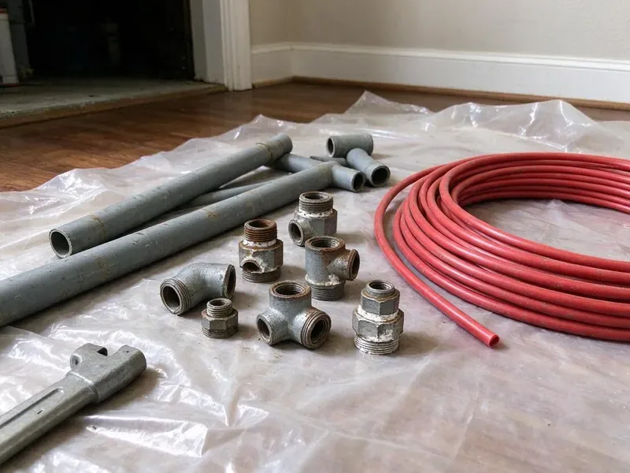

Tankless Water Heater Replacement in Winooski, VT
Get a new tankless from CKV Plumbing in Winooski, VT, set up with flush valves for easy descaling.
- Gas Line Checks Included
- Code Approved Venting
- Licensed Gas Line Plumbers
- Manufacturer Warranty Registered for You

Need a Tankless Water Heater Replacement in Winooski, VT?
Get a free estimate and a plain answer on whether tankless fits your house.
Replacing Tankless Water Heaters in Winooski, VT Homes
CKV Plumbing replaces failing tankless water heaters with condensing and non-condensing units sized to your home's real flow demand. We check gas, venting and hardness first. That way the new heater is not starved for fuel or choked by scale, which are the two most common reasons we see early failures.
Our expertise includes:
- Flow-based sizing of new tankless units.
- Condensing unit installs with PVC venting and condensate neutralizers
- Safe gas and electric connections for new units.

Additional Plumbing Replacement Services in Winooski, VT
When repairs are no longer enough, our replacement services in Winooski, VT deliver modern, efficient equipment installed right.


Customers
Why Choose CKV Plumbing for Tankless Water Heater Replacement in Winooski, VT?
A tankless heater is only as good as its gas supply and venting. Both get measured before the quote, so the unit fires at full output under heavy demand. Full fire, full flow.
- Right-Sized Units, We calculate gallons per minute and temperature rise for your fixtures instead of guessing from square footage.
- Longer Life, With yearly flushing, a tankless can run 20 years, about twice a typical tank.
- Lower Gas Bills, A tankless heats water only when a tap opens, which trims Vermont utility bills compared with a tank.
Citywide Coverage
From older ranch homes to new construction, every part of Winooski sits close to one of our tankless service trucks. Wherever you are, help is a call away. We cover the outskirts too.
Experienced Team
Each technician at CKV Plumbing focuses on the details that make tankless work, like gas line sizing and vent termination clearances. Performance hinges on them. They decide safety as well.
Safety-First Approach
Vent termination is where safety starts. Manufacturers set minimum distances from windows, doors and air intakes, and local Vermont code may add its own rules on top. We measure every one.
Trusted Certified Winooski Plumbing Services Professionals
At CKV Plumbing, we are proud to offer certified plumbing services throughout Winooski, VT. Credentials matter in this trade. Our plumbers hold recognized industry credentials, and they follow strict safety and quality rules on every repair, installation and maintenance call we run.
Call Us Now PHCC Plumbing Contractor Recognition
PHCC Plumbing Contractor Recognition Better Business Bureau (BBB) Accreditation
Better Business Bureau (BBB) Accreditation Angi Certified Pro
Angi Certified Pro ISO 9001 Quality Management Certification
ISO 9001 Quality Management CertificationTankless Water Heater Replacement in Winooski, VT
Residential Tankless Water Heater Replacement in Winooski
Sizing a tankless starts with how many fixtures run at once and how cold the incoming water is, not the square footage of the house. Two showers and a dishwasher at the same time can need 7 or 8 gallons per minute. That number picks the unit. We handle the gas, water and vent changes needed to bring the old installation up to current code.

Rinnai Condensing Upgrades in Winooski, VT
Rinnai Sensei condensing models replace older non-condensing Rinnai units in a lot of homes, but the venting changes from stainless to PVC. The vent swap is part of our job. Gas and water connections usually line up.
Tank to Tankless Conversions in Winooski, VT
Pulling a 50 gallon tank out of a garage frees up floor space and ends standby heat loss. Gas is the catch, since tankless units usually need 3/4-inch pipe or larger and a new vent. We check the meter size and pipe run before quoting, and we cap or reroute the old flue and seal the roof penetration if it is no longer needed. Expect a full day.
Emergency Tankless Water Heater Replacement in Winooski
No hot water from a tankless usually shows up as an error code on the controller, and the code tells us half of what we need to know. Send us a photo of the display. If the heat exchanger is leaking, replacement is the fix, and we can often have a new unit running the same or next day.
Tankless vs. Tank Replacement Cost in Winooski, VT
Tankless costs more up front than a tank, often twice as much installed. Across 20 years the gap narrows, because one tankless may outlast two tanks, but your usage decides the payback. You see both quotes.
Like-for-Like Tankless Swaps in Winooski
A cracked heat exchanger or a failed control board on an older tankless is usually not worth repairing past the ten-year mark. We match the new unit to your gas line, vent type and mounting spot whenever we can. Plan on four to six hours.
Tankless-to-Tankless Replacement in Winooski
Replacing an existing tankless with a new one is usually the simpler job, since the gas line, vent path and water connections are already there. We confirm they are sized right for the new unit. Old service valves often get replaced too.

Gas Tankless Water Heater Replacement in Winooski
A gas tankless unit at full fire can pull 199,000 BTU, roughly five times what a 40 gallon tank burner uses. The gas line usually has to be 3/4-inch or larger. We check meter capacity and pipe length against the manufacturer's sizing chart, then confirm pressure with the unit running. Starved units throw error codes.
Nearby Tankless Water Heater Replacement in Winooski, VT
Tankless problems tend to show up at the worst time of day. Local techs can usually tell on the first visit whether repair or replacement is the smarter call. We register the manufacturer warranty for you.
Searching for tankless water heater replacement near you in Winooski, VT usually starts with an error code on the controller and a cold shower. Tell us the code. Most codes point right at the fault.
CKV Plumbing at a Glance
- Licensed and insured plumbers serving Winooski, VT
- 24/7 emergency service with same-day scheduling
- Upfront, flat-rate pricing before work begins
- 4.8-star rated by 553+ Vermont customers
Winooski Map
Winooski Information
- Population
- 8,251
- Area codes
- Local
- Service area
- Winooski and communities within 40 miles
- Nearby
- Burlington, Essex Junction, South Burlington, Shelburne
Replacing a worn tankless in Winooski, VT pays off fastest when the new unit gets flush valves and a gas line that can feed it at full fire.
Talk to a Plumber
Call CKV Plumbing for honest, reliable plumbing from people who know the trade in Winooski, VT.
Our Specialized Plumbing Services in Winooski, VT
At CKV Plumbing, you get every kind of plumbing service from one company across Winooski, VT. From leak detection to full system installs, our team works fast and charges fair prices on homes and commercial properties alike. Take a look at our core services below:


How a Tankless Replacement Works in Winooski, VT
From the first call to the final combustion test, each step is short.
Call Us
Call (802) 209-5139 with your current model number and a photo of the install. We give you a rough price and schedule a visit.
Size and Inspect
Our tech measures gas line size, meter capacity, venting path and water hardness. Then we recommend a unit that matches your demand.
Install and Test
We remove the old heater, install the new one with service valves and venting, then test gas pressure and combustion. You get a walkthrough on settings and flushing.
Frequently Asked Questions About Tankless Water Heater Replacement in Winooski
Most tankless replacements in Winooski, VT cost $3,000 to $6,000 installed. The spread comes from unit capacity and brand, and from whether the job is a straight swap or a conversion from a tank with new gas and vent work. We quote in writing first.
We do not recommend it. Tankless installs combine gas sizing, venting clearances, condensate disposal and sometimes high-amperage electrical, and a mistake in any of those can mean carbon monoxide or a voided warranty. Most brands require a licensed installer.
Repeated error codes, fluctuating temperature or water inside the cabinet. A leaking heat exchanger usually means replacement is the better value.
Most tankless swaps land between four and eight hours. Conversions run longer since they may need new gas pipe, a new vent and a new spot on the wall. Same-day hot water is normal.
Yes, for most homes. They heat only on demand and avoid standby loss, which saves the most in homes with uneven hot water use. Savings vary with usage.
Often, yes, especially on a conversion. Many tankless units need 3/4-inch gas pipe and a meter that can supply 199,000 BTU on top of your furnace, range and dryer.
Gas lines, electrical wiring, water connections and venting all come into play. Any slip can cause a gas leak or a unit that will not stay lit, and may void the warranty. Use a licensed plumber.
Yes, in most of Winooski and Vermont. A permit is usually required, especially when the job changes the gas line or adds electrical work, and we handle the paperwork and the inspection. It is included in the quote.
Hear From Customers Who Hired Our Plumbing Experts

Rachel N.
Hard water was leaving white crust on every faucet and our dishwasher was struggling. The tech tested the water, recommended a softener sized for a family of five, and installed it with a bypass valve in one afternoon. The spots on our glasses are gone.
Water Softener · Essex Junction, VT
Mark T.
The floor drain in our office break room backed up every few weeks. The plumber ran a cable, then put a camera down and found roots at a joint about thirty feet out. Seeing it on the screen made the decision easy.
Drain Cleaning · St. Albans, VTMegan L.
Our upstairs tub drained so slowly that every shower turned into a bath. CKV Plumbing pulled a wad of hair out of the stopper and then snaked the line past the trap. Three months later it still drains fast.
Drain Cleaning · Essex Junction, VTGreg S.
I manage a small strip center with six tenants. CKV Plumbing handles our annual backflow testing and fixed a recurring clog in the shared sewer line that had been backing into the nail salon. Their reports come in clean and on time.
Commercial Plumbing · Middlebury, VT
Tyler J.
We bought a taller comfort height toilet for my dad, who just had knee surgery. The plumber pulled the old one, found the flange was cracked, and replaced it before setting the new bowl. Took about two hours.
Toilet Installation · South Burlington, VTLisa C.
Water was pouring out from under the washing machine on a holiday weekend. CKV Plumbing talked me through closing the valves over the phone and had a plumber at the house within ninety minutes. It was a burst fill hose.
Emergency Plumbing · Shelburne, VT